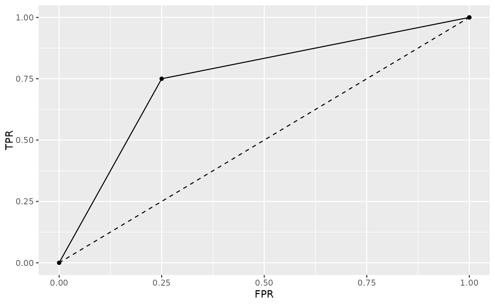

Construction of ROC and PRC data and plots.
Usage
qroc(x, ...)
# S3 method for default
qroc(x, ...)
# S3 method for qwraps2_confusion_matrix
qroc(x, ...)
# S3 method for glm
qroc(x, ...)
qprc(x, ...)
# S3 method for default
qprc(x, ...)
# S3 method for qwraps2_confusion_matrix
qprc(x, ...)
# S3 method for glm
qprc(x, ...)Value
a ggplot. Minimal aesthetics have been used so that the user may modify the graphic as desired with ease.
Details
The area under the curve (AUC) is determined by a trapezoid approximation for both the AUROC and AUPRC.
More details and examples for graphics within qwraps2 are in the vignette(“qwraps2-graphics”, pacakge = qwraps2)
Examples
#########################################################
# Example 1
df <-
data.frame(
truth = c(1, 1, 1, 1, 1, 1, 1, 1, 0, 0, 0, 0)
, pred = c(1, 1, 1, 1, 1, 1, 0, 0, 1, 0, 0, 0)
)
cm <- confusion_matrix(df$truth, df$pred)
qroc(cm)

qprc(cm)
#########################################################
# Getting a ROC or PRC plot from a glm object:
mod <- glm(
formula = spam ~ word_freq_our + word_freq_over + capital_run_length_total
, data = spambase
, family = binomial()
)
qroc(mod)
 qprc(mod)
#########################################################
# plot more than one ROC
mod2 <- update(mod, formula = . ~ word_freq_our)
cm1 <- confusion_matrix(mod)
cm2 <- confusion_matrix(mod2)
auc_data <- rbind(cbind(cm1$cm_stats, model = "Model 1"),
cbind(cm2$cm_stats, model = "Model 2"))
qroc(auc_data) + ggplot2::aes(color = model)
qprc(auc_data, prevalence = cm1$prevalence) + ggplot2::aes(color = model)
qprc(mod)
#########################################################
# plot more than one ROC
mod2 <- update(mod, formula = . ~ word_freq_our)
cm1 <- confusion_matrix(mod)
cm2 <- confusion_matrix(mod2)
auc_data <- rbind(cbind(cm1$cm_stats, model = "Model 1"),
cbind(cm2$cm_stats, model = "Model 2"))
qroc(auc_data) + ggplot2::aes(color = model)
qprc(auc_data, prevalence = cm1$prevalence) + ggplot2::aes(color = model)